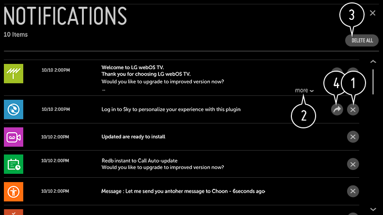

Uso de Notificaciones
Puede ver al mismo tiempo todas las notificaciones de las aplicaciones de la TV y del servicio de LG.
Puede ver y eliminar cada mensaje de notificación y pasar directamente a la aplicación o al sitio web mediante las notificaciones que admitan accesos directos.
-
Pulse el botón
 del mando a distancia.
del mando a distancia.
-
Vaya a
 General Acerca de esta TV y seleccione Notificaciones.
General Acerca de esta TV y seleccione Notificaciones.

- Puede eliminar las notificaciones.
- Para las notificaciones que tengan gran cantidad de contenido, pulse más para abrirlas en vista completa.
- Puede eliminar todas las notificaciones.
- Puede iniciar la aplicación o visitar la URL.